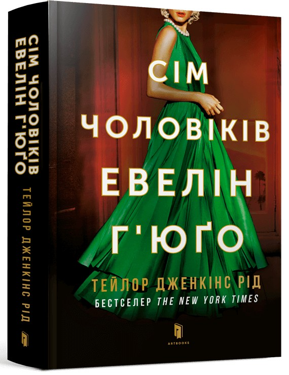

|
Відгуки:
- Сівши читати цю книгу, я не очікувала багато, бо шукала щось для читання перед сном але на другий вечір я не змогла зупинитись, я читала до ранку. Весь процес читання мене жбурляло то в одні емоції, то і інші, справжні емоційні гірки від радості до крокодилячих сліз. Не описати як я рада що купила її! Ця книжка зачепила у мені щось важливе і я точно запам'ятаю її на усе своє життя.
- Книгу прочитала за один день. Швидко читається і є про що задуматись.
|

|
Сім чоловіків Евелін Г’юґо
Евелін Г’юґо, у минулому голлівудська ікона кіно, нарешті готова пролити світло на своє гламурне і скандальне життя. Але коли задля цієї мети вона обирає нікому невідому репортерку з журналу Монік Грант, це дивує всіх, а найбільше — саму Монік. Чому вона? Чому зараз?
Сповнена рішучості використати цю можливість, Монік вислуховує історію життя кінодіви. Від її шляху до Лос-Анджелеса у 1950-х до рішення залишити шоу-бізнес у 80-х і, звичайно, про сім чоловіків у житті Евелін.
Акторка розкриває правду про нещадні амбіції, несподівану дружбу та велике заборонене кохання. Монік починає відчувати справжній зв’язок із легендарною зіркою, та коли історія наближається до завершення, стає зрозуміло, що життя Евелін перетинається з її власним, трагічно й невідворотно.
|